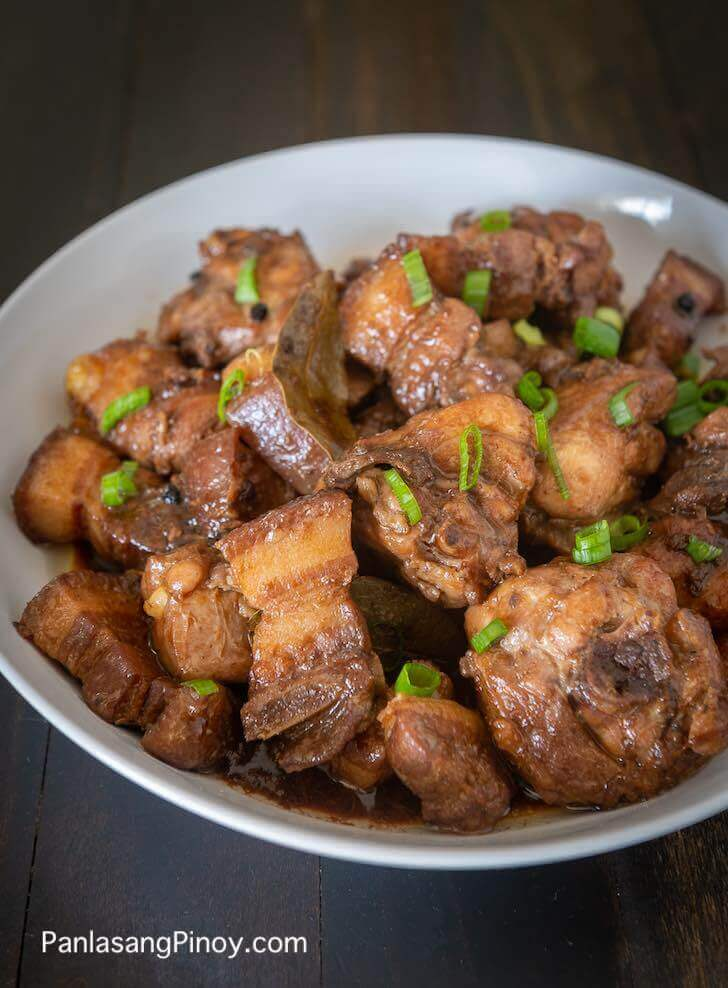

Chicken Pork Adobo Recipe

Pork and Chicken Adobo is a version of Filipino adobo using the combination of chicken and pork.
It is widely considered as the most popular Filipino dish
where chicken and pork is marinated in vinegar, soy sauce, garlic, bay leaves, peppercorns and sugar.
Ingredients
- 1 1/2 lbs pork belly chopped
- 1 1/2 lbs chicken cut into serving pieces
- 4 pieces dried bay leaves
- 2 teaspoons whole peppercorn
- 1 head garlic slightly crushed
- 6 tablespoons vinegar white
- 1/2 cup soy sauce
- 1 tablespoon oyster sauce
- 2 teaspoons brown sugar
- 2 cups water
- 3 tablespoons cooking oil
- salt to taste
Directions
-
In a wide pot over medium heat, heat oil. .
-
Once the oil becomes hot, add the garlic. Cook until the color turns golden brown.
-
Remove the garlic and set aside. Add pork and chicken.
Cook for 5 minutes or until the color turns light brown.
-
Add whole peppercorn, bay leaves, oyster sauce, soy sauce, and water.
Let boil and simmer until the meat gets tender.
-
Add the sugar and stir.
-
Pour-in vinegar and let boil.Simmer until most of the liquid evaporates.
-
Add salt to taste. Put-in the fried garlic, stir, and cook for 2 minutes.
-
Serve. Share and enjoy!